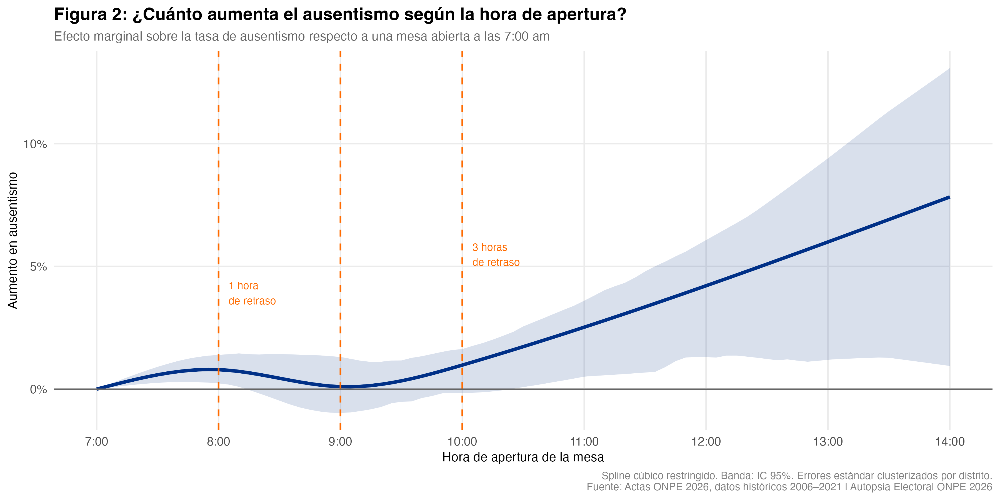
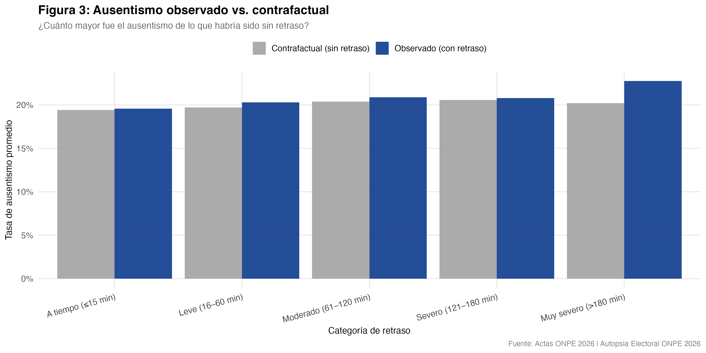
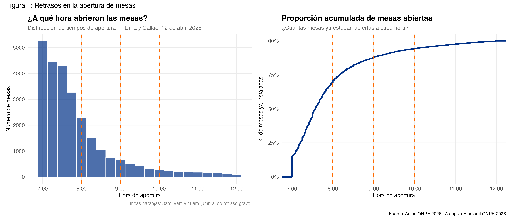
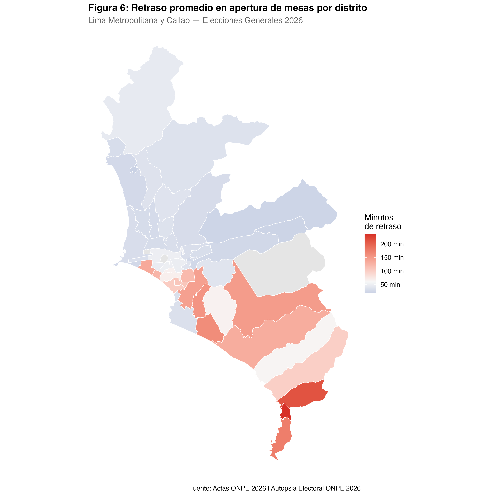
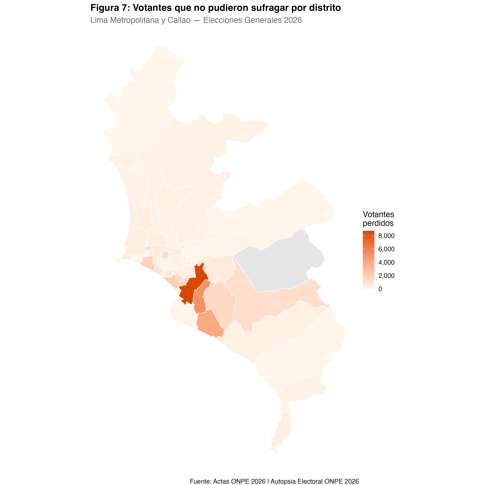
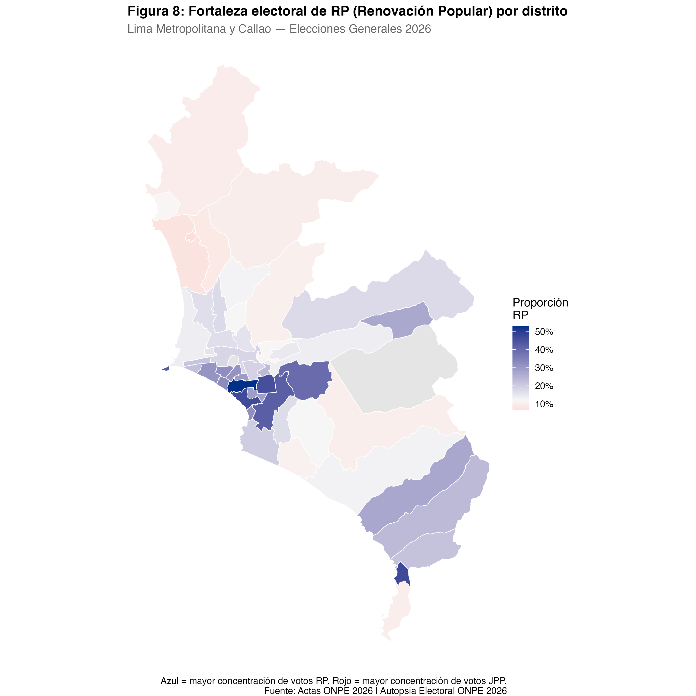
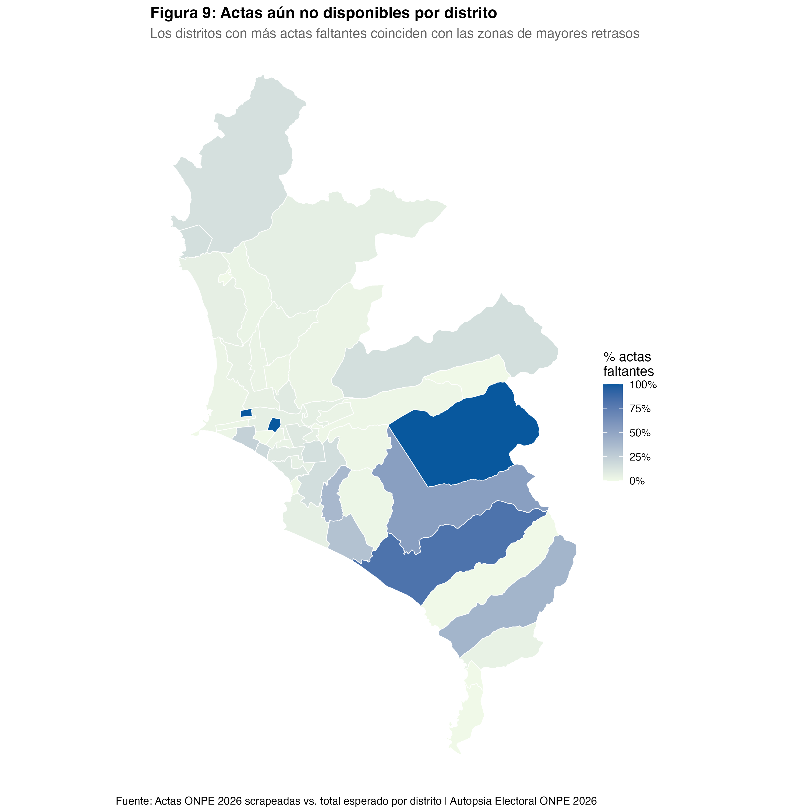
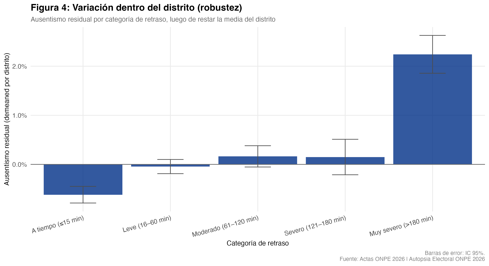
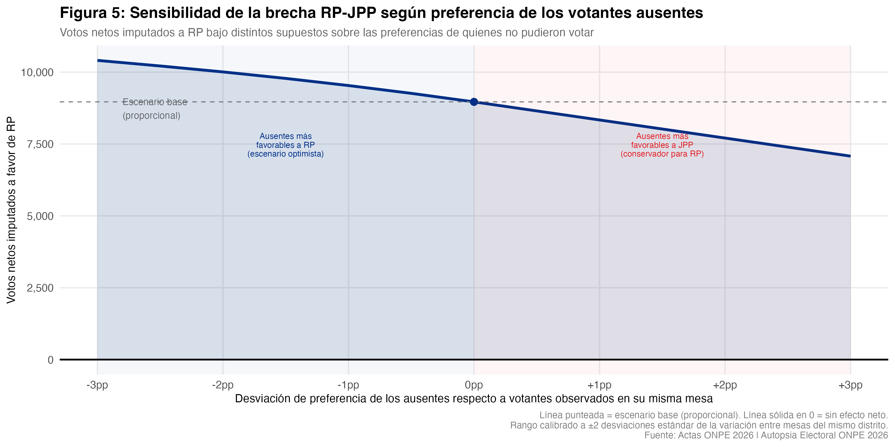

Las fallas logísticas de la ONPE y su impacto en el resultado electoral
Por Mathieu Rojas · Actualizándose...
Análisis en curso · — de mesas de sufragio procesadas · Se actualiza conforme la ONPE publica nuevas actas
El 12 de abril de 2026, la empresa Servicios Generales Galaga S.A.C. no cumplió con entregar los camiones contratados por la ONPE. Miles de mesas de sufragio abrieron tarde. Miles de ciudadanos no pudieron votar. Este análisis no alega fraude. Documenta algo distinto: una falla logística comprobada que, en una elección donde el segundo y tercer lugar se separan por miles de votos, pudo haber cambiado el resultado.
⚠️ Estimación en curso. Las mesas de sufragio con datos aún faltantes se concentran en los distritos con mayores retrasos — San Juan de Miraflores, Villa El Salvador, Lurín y Pachacámac. Esto significa que las cifras actuales son conservadoras: el impacto real es probablemente mayor. Este análisis se actualiza automáticamente.
—
Ciudadanos que no pudieron ejercer su voto
—
Votos netos estimados a favor de RP sobre JPP
—
De mesas de sufragio con datos disponibles
¿Qué encontramos?
No todas las demoras importaron igual. Una mesa que abrió 30 minutos tarde probablemente no disuadió a nadie — la mayoría de electores esperó. Pero una mesa que abrió a las 11 de la mañana, o peor, a la 1 de la tarde, tuvo consecuencias reales y medibles.
El umbral importa. Nuestro modelo econométrico solo atribuye efectos causales a mesas que abrieron con dos horas o más de retraso. Por debajo de ese umbral, el efecto estadístico no es distinguible de cero. Esto hace la estimación conservadora — y por eso, más sólida.
Cómo aumentó el ausentismo según la hora de apertura

Efecto marginal estimado sobre la tasa de ausentismo. Basado en — mesas de sufragio (—% del total esperado para Lima y Callao). Banda: intervalo de confianza al 95% por bootstrap.
Ausentismo observado frente a lo esperado sin retrasos

La diferencia entre las barras azules (lo que ocurrió) y grises (lo que habría ocurrido sin retrasos) representa los votantes atribuibles a las fallas logísticas. Solo se muestran diferencias estadísticamente significativas.
Distribución de los retrasos

La mayoría de mesas de sufragio abrió cerca de las 7:00 a.m. Pero una cola importante de mesas abrió tarde, algunas hasta las 2:00 p.m.
¿Dónde ocurrió?
Los retrasos no se distribuyeron aleatoriamente. Se concentraron en determinados distritos de Lima, principalmente en Lima Sur y Lima Oeste — que son, no casualmente, parte del territorio electoral más fuerte de López Aliaga.

Retraso promedio en apertura de mesas por distrito.

Votantes que no pudieron sufragar por distrito.

Proporción de votos a favor de RP por distrito. Los distritos con más retrasos coinciden con los de mayor apoyo a López Aliaga.

Porcentaje de actas aún no disponibles. Los distritos con más actas faltantes son los mismos con mayores retrasos — lo que sugiere que la cobertura actual podría subestimar el impacto total.
¿Qué tan sólido es el resultado?
El supuesto central es que los votantes que no pudieron ir habrían votado igual que sus vecinos de mesa. Pero ¿qué pasa si ese supuesto es incorrecto? El siguiente simulador permite explorar el resultado bajo distintos escenarios.

Primera verificación de robustez: el mismo patrón aparece cuando comparamos solo mesas dentro del mismo distrito, eliminando cualquier diferencia entre distritos.
Simulador: ¿y si los ausentes votaban diferente?
Mueve el control para asumir que los votantes ausentes eran más o menos favorables a JPP que los votantes observados en la misma mesa. El rango está calibrado a la variación real observada entre mesas del mismo distrito.
0 pp
—
Votos imputados a RP
—
Votos imputados a JPP
—
Diferencia neta a favor de RP
—
Votantes que no pudieron sufragar

Segunda verificación de robustez: la ventaja estimada a favor de RP se mantiene positiva en todos los escenarios evaluados dentro del rango empíricamente calibrado.
Cómo lo calculamos
¿Qué son los efectos fijos de distrito?
Cada distrito tiene su propio nivel "normal" de ausentismo — en algunos distritos siempre va menos gente a votar, independientemente de lo que ocurra ese día. Los efectos fijos de distrito sirven para descontar ese nivel histórico antes de medir el efecto de los retrasos. En otras palabras: comparamos cada mesa con lo que habría sido su propio ausentismo de no haber habido retrasos, no con el ausentismo de un distrito diferente.
¿Por qué un spline y no una línea recta?
La relación entre el retraso y el ausentismo no es lineal. 30 minutos de retraso tienen un efecto casi nulo; 3 horas tienen un efecto muy grande. Un spline cúbico restringido permite que la curva tome la forma que los datos indican, sin imponer ninguna forma específica de antemano.
¿Por qué solo contamos mesas con más de 2 horas de retraso?
Porque por debajo de ese umbral, el efecto estadístico no es distinguible de cero — no podemos rechazar la hipótesis de que el impacto fue nulo. Incluir esas mesas inflaría artificialmente la estimación. Solo contamos lo que los datos nos permiten afirmar con confianza estadística.